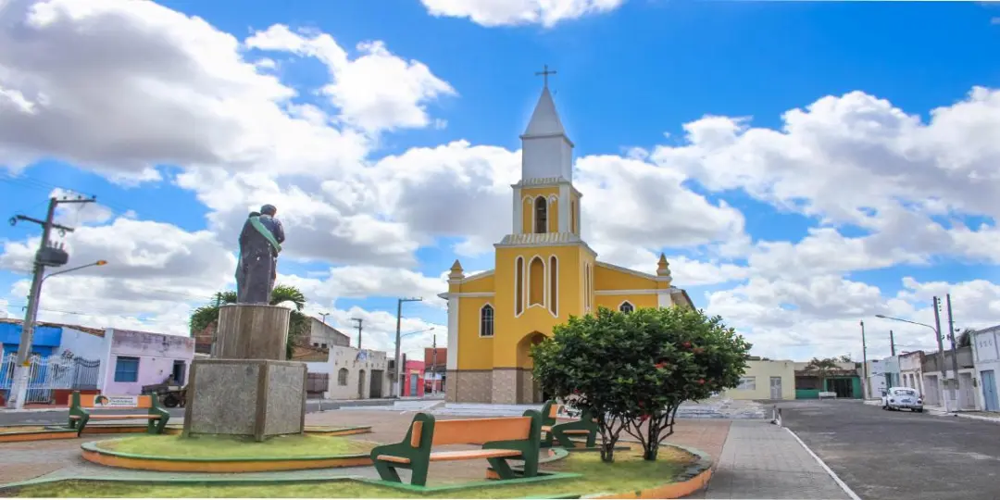

Pedrinhas
História
O nome da cidade de Pedrinhas, a 89 quilômetros de Aracaju, surgiu em decorrência do Engenho Pedrinhas, construído na segunda metade do século XIX em terras dos municípios de Arauá e Itabaianinha. O proprietário do engenho, Francisco Manoel de Goes, conhecido por Chico Perpétua, construiu também em 1876 uma casa para a reunião de uma feira livre. Nas proximidades da casa havia um grande cajueiro, e foi embaixo dele que os feirantes começaram a se reunir todos os domingos.
A feira começou a progredir, atraindo novos moradores que construíam suas casas, contribuindo para a formação do arraial que recebeu o nome de Pedrinhas. Hoje a feira da cidade é realizada às segundas, em outro local. O aposentado Luiz Dias Sobrinho, 83 anos, lembra da época em que a feira ainda acontecia aos domingos. “A feira era pequena, só matavam dois bois e tinha poucas frutas e verduras, mas era muito animada”.
Em 1893, Pedrinhas tinha cerca de 20 residências. Como havia um grande número de crianças, em 29 de novembro foi criada a primeira cadeira de ensino, que passou a funcionar no ano letivo seguinte. De acordo com a Enciclopédia dos Municípios Brasileiros, em 1911 foram colocados os trilhos da Ferrovia Federal Leste Brasileiro. Como a povoação já estava bem desenvolvida, foi feita também uma estação, fato que abriu melhores possibilidades de progresso.
O deputado Elias Leite apresentou à Assembleia Legislativa um projeto que, convertido na Lei nº 641, de 9 de outubro de 1913, determinou novos limites para o município de Arauá, e toda área da povoação Pedrinhas passou a pertencer a Itabaianinha. Os trilhos da Leste Brasileiro foram os maiores responsáveis pelo desenvolvimento do povoado. Mas com o afastamento dos operários da construção da ferrovia para um local distante, o comércio de Pedrinhas passou a ter menos movimento. A pecuária e a citricultura nascentes levaram Pedrinhas a atingir em 1953 a autonomia municipal.
fonte: https://pt.wikipedia.org/wiki/PedrinhasPontos Turísticos
Paróquia Sao José
A igreja organiza eventos, promove encontros, articula grupos de trabalho para arrecadar doações, distribui tarefas, escolhe entre os “ilustres” os integrantes da “Comissão de Festa”,responsáveis por organizaro evento, além de mediar,muitas vezes,os conflitos entre grupos e famílias da cidade. Fazer parte dos preparativos da festa, participar como convidado doalmoço, o qual é oferecido pelo padreno dia 19,antes da procissão,sãoalguns dosdistintivos de honra, merecimento ou mesmo poder.
Dados Gerais de acordo com o IBGE
| Prefeito (a) | Francecleide Lima Santos Souza |
| Vice-Prefeito (a) | Eliane dos Reis Santos |
| Site do município | https://pedrinhas.se.gov.br/ |
| Área territorial | 33,942 km² |
| População estimada | 8.833 pessoas |
| Densidade demográfica | 260,2 hab/km² |
| IDHM | 0,592 |
| PIB per capita | R$ 4.073,21 |